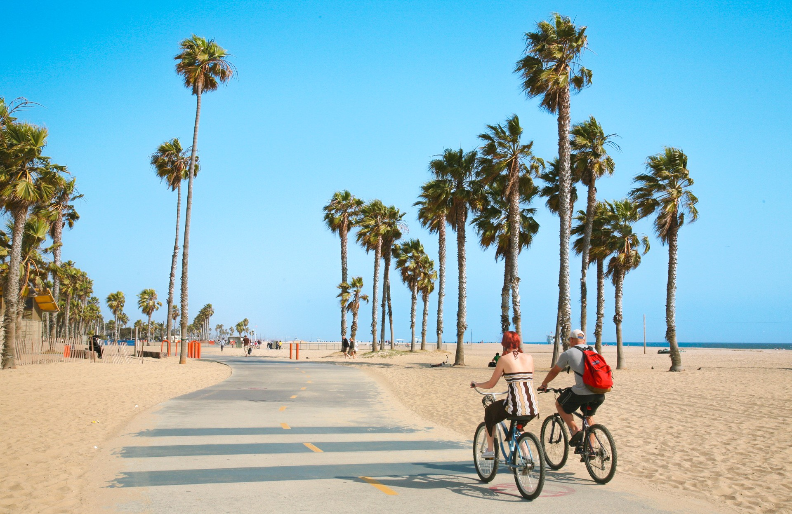

Private and Small Group Bike Tour
3 Hours | English | Up to 5 People | Ages 13+
Looking for a great way to explore the beach? You're in the right place. Discover the best of Santa Monica and Venice on our three-hour guided bike tour!
Highlights
- Visit the iconic Santa Monica Pier and Santa Monica Beach
- Former Marion Davies Beach House now Annenberg Community Beach House where Hollywood stars were once hosted
- See the vibrant environment of Venice and Muscle Beach
- Lastly, the beautiful Venice Canals that are surely to blow you away
- The California sun, sand, and ocean breezes
Full Description
Witness the best of the beaches of Santa Monica and Venice on our three-hour guided bike tour! Our guided bike tour allows you to witness sights where buses and cars can't take you. Experience the cities of Santa Monica and Venice beach with our friendly and informative tour guides, who will share with you fun and historical facts along the way!
Our small, intimate group tours are perfect for friends, families, couples, and solo riders! Our tour guides will make sure you feel comfortable, relaxed, and right at home as you sightsee with us! You might even come out with a new friend after the tour ends.
What's Included
- Licensed and friendly tour guide
- Helmet and safety equipment
- Bike rental
- Water Bottle
Meeting Point
214 Pier Ave, Santa Monica, CA 90405
Please arrive 15 minutes before the scheduled tour time.
Customer Reviews
Fun Tour!
- Joe H., September 2026 | TripAdvisor
"Very chill and fun tour. The e-bikes were a breeze to ride, and the beaches are absolutely beautiful."
Great Guided Bike Tour
- Colleen R., September 2026 | TripAdvisor
"Great guided tour by bike. Carol's connections with locals made it extra special. I've been to Santa Monica and Venice before but this tour showed me sights and gave me information I've never seen or heard of before. A great experience to learn more about the area up close."
Great Day on the Beach
- Angel A., August 2026 | TripAdvisor
"Barb was kind, professional, and had lots of interesting bits of Hollywood trivia as well as thoughtful insights. I was solo that day and she helped make the expereience a perfect excursion."
Fantastic!
- Troy E., August 2026 | TripAdvisor
"Wonderful tour! Barbara was a great tour guide! Good bikes and equipment. Beautiful area to bike!"
Great Experience
- Janet F., May 2026 | TripAdvisor
"We had never been on ebikes before and found it very easy. The guide was knowledgeable and entertaining. The starting point is a little store on a side street with meter parking. There is a little riding on streets, especially through the venice canals. We were very lucky, nobody else signed up so our family had a private tour. Would definitely do it again."
Brilliant Tour of the Area
- Rachel S., June 2025 | TripAdvisor
"Fun and comprehensive ride through Santa Monica and Venice. Took in all the sights. Comfortable good quality bikes. Barb is wonderful. Definitely recommend."
Starting at
$65 per person
- Sun
- Mon
- Tue
- Wed
- Thu
- Fri
- Sat
Select a date to book a tour.